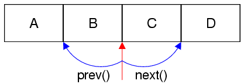

Java-style Iterators in Qt
Java-Style Iterators
For each container class, there are two Java-style iterator data types: one that provides read-only access and one that provides read-write access.
Note: New code should use STL-Style iterators since these are more efficient and can be used together with Qt's and STL's generic algorithms.
| Containers | Read-only iterator | Read-write iterator |
|---|---|---|
| QList<T>, QQueue<T>, QStack<T>, | QListIterator<T> | QMutableListIterator<T> |
| QSet<T> | QSetIterator<T> | QMutableSetIterator<T> |
| QMap<Key, T>, QMultiMap<Key, T> | QMapIterator<Key, T> | QMutableMapIterator<Key, T> |
| QHash<Key, T>, QMultiHash<Key, T> | QHashIterator<Key, T> | QMutableHashIterator<Key, T> |
In this discussion, we will concentrate on QList and QMap. The iterator types for QSet have exactly the same interface as QList's iterators; similarly, the iterator types for QHash have the same interface as QMap's iterators.
Unlike STL-Style iterators, Java-style iterators point between items rather than directly at items. For this reason, they are either pointing to the very beginning of the container (before the first item), at the very end of the container (after the last item), or between two items. The diagram below shows the valid iterator positions as red arrows for a list containing four items:

Here's a typical loop for iterating through all the elements of a QList<QString> in order:
QList<QString> list = {"A", "B", "C", "D"}; QListIterator<QString> i(list); while (i.hasNext()) QString s = i.next();
It works as follows: The QList to iterate over is passed to the QListIterator constructor. At that point, the iterator is located just in front of the first item in the list (before item "A"). Then we call hasNext() to check whether there is an item after the iterator. If there is, we call next() to jump over that item. The next() function returns the item that it jumps over. For a QList<QString>, that item is of type QString.
Here's how to iterate backward in a QList:
QListIterator<QString> i(list); i.toBack(); while (i.hasPrevious()) QString s = i.previous();
The code is symmetric with iterating forward, except that we start by calling toBack() to move the iterator after the last item in the list.
The diagram below illustrates the effect of calling next() and previous() on an iterator:

The following table summarizes the QListIterator API:
| Function | Behavior |
|---|---|
| toFront() | Moves the iterator to the front of the list (before the first item) |
| toBack() | Moves the iterator to the back of the list (after the last item) |
| hasNext() | Returns true if the iterator isn't at the back of the list |
| next() | Returns the next item and advances the iterator by one position |
| peekNext() | Returns the next item without moving the iterator |
| hasPrevious() | Returns true if the iterator isn't at the front of the list |
| previous() | Returns the previous item and moves the iterator back by one position |
| peekPrevious() | Returns the previous item without moving the iterator |
QListIterator provides no functions to insert or remove items from the list as we iterate. To accomplish this, you must use QMutableListIterator. Here's an example where we remove all odd numbers from a QList<int> using QMutableListIterator:
QMutableListIterator<int> i(list); while (i.hasNext()) { if (i.next() % 2 != 0) i.remove(); }
The next() call in the loop is made every time. It jumps over the next item in the list. The remove() function removes the last item that we jumped over from the list. The call to remove() does not invalidate the iterator, so it is safe to continue using it. This works just as well when iterating backward:
QMutableListIterator<int> i(list); i.toBack(); while (i.hasPrevious()) { if (i.previous() % 2 != 0) i.remove(); }
If we just want to modify the value of an existing item, we can use setValue(). In the code below, we replace any value larger than 128 with 128:
QMutableListIterator<int> i(list); while (i.hasNext()) { if (i.next() > 128) i.setValue(128); }
Just like remove(), setValue() operates on the last item that we jumped over. If we iterate forward, this is the item just before the iterator; if we iterate backward, this is the item just after the iterator.
The next() function returns a non-const reference to the item in the list. For simple operations, we don't even need setValue():
QMutableListIterator<int> i(list); while (i.hasNext()) i.next() *= 2;
As mentioned above QSet's iterator classes have exactly the same API as QList's. We will now turn to QMapIterator, which is somewhat different because it iterates on (key, value) pairs.
Like QListIterator, QMapIterator provides toFront(), toBack(), hasNext(), next(), peekNext(), hasPrevious(), previous(), and peekPrevious(). The key and value components are extracted by calling key() and value() on the object returned by next(), peekNext(), previous(), or peekPrevious().
The following example removes all (capital, country) pairs where the capital's name ends with "City":
QMap<QString, QString> map = { {"Paris", "France"}, {"Guatemala City", "Guatemala"}, {"Mexico City", "Mexico"}, {"Moscow", "Russia"} }; ... QMutableMapIterator<QString, QString> i(map); while (i.hasNext()) { if (i.next().key().endsWith("City")) i.remove(); }
QMapIterator also provides a key() and a value() function that operate directly on the iterator and that return the key and value of the last item that the iterator jumped above. For example, the following code copies the contents of a QMap into a QHash:
QMap<int, QWidget *> map; QHash<int, QWidget *> hash; QMapIterator<int, QWidget *> i(map); while (i.hasNext()) { i.next(); hash.insert(i.key(), i.value()); }
If we want to iterate through all the items with the same value, we can use findNext() or findPrevious(). Here's an example where we remove all the items with a particular value:
QMutableMapIterator<int, QWidget *> i(map); while (i.findNext(widget)) i.remove();